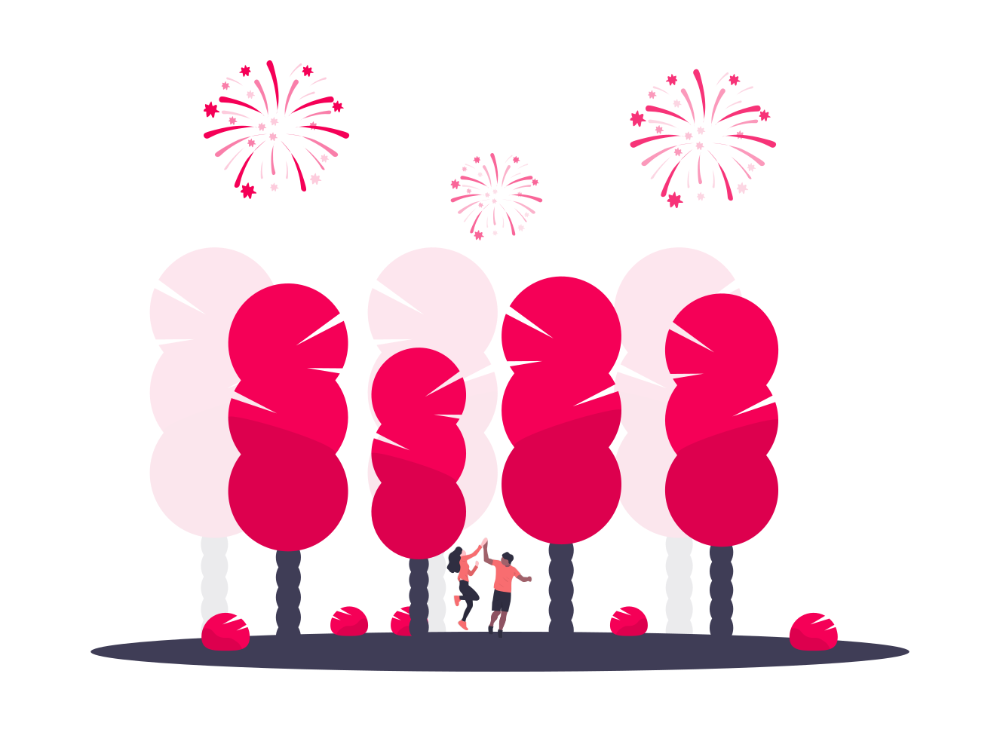

Aniversário de Garça
O aniversário de Garça, no estado de São Paulo, é uma ocasião
especial que une os moradores locais em celebração da história,
cultura e progresso da cidade. A cada ano, a comunidade se reúne
para comemorar o aniversário de fundação do município, relembrando
suas origens e olhando para o futuro com esperança e determinação.